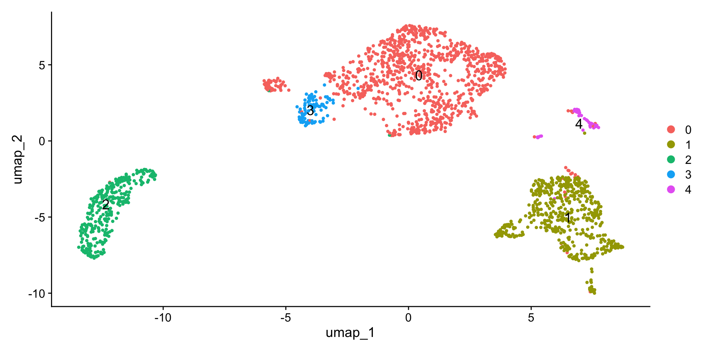
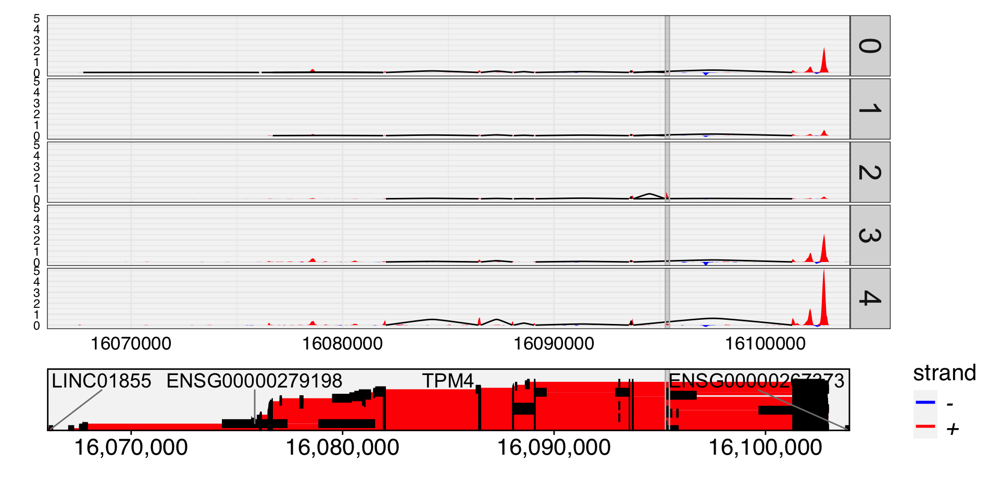

require(Yano)
data("glbt_small")
DefaultAssay(glbt_small) <- "RNA"
glbt_small <- NormalizeData(glbt_small) %>% RunUMAP(dim = 1:20)
DimPlot(glbt_small, label = TRUE, label.size = 5)
DefaultAssay(glbt_small) <- "exon"
glbt_small <- NormalizeData(glbt_small)
Meta(glbt_small) %>% headdata frame with 0 columns and 6 rowsglbt_small <- ParseExonName(glbt_small)
Meta(glbt_small) %>% head chr start end gene_name strand
chr1:154169305-154169383/-/TPM3 chr1 154169305 154169383 TPM3 -
chr11:35197162-35197793/+/CD44 chr11 35197162 35197793 CD44 +
chr11:75421727-75422280/+/RPS3 chr11 75421727 75422280 RPS3 +
chr11:123060825-123061329/-/HSPA8 chr11 123060825 123061329 HSPA8 -
chr11:123061588-123061833/-/HSPA8 chr11 123061588 123061833 HSPA8 -
chr11:123061869-123062022/-/HSPA8 chr11 123061869 123062022 HSPA8 -grep("_wm$",names(glbt_small), value=TRUE)character(0)glbt_small <- RunAutoCorr(glbt_small)
grep("_wm$",names(glbt_small), value=TRUE)[1] "pca_wm"# Perform spatial dissimilarity test
glbt_small <- RunSDT(glbt_small, bind.name = "gene_name", bind.assay = "RNA")
Meta(glbt_small) %>% head chr start end gene_name strand
chr1:154169305-154169383/-/TPM3 chr1 154169305 154169383 TPM3 -
chr11:35197162-35197793/+/CD44 chr11 35197162 35197793 CD44 +
chr11:75421727-75422280/+/RPS3 chr11 75421727 75422280 RPS3 +
chr11:123060825-123061329/-/HSPA8 chr11 123060825 123061329 HSPA8 -
chr11:123061588-123061833/-/HSPA8 chr11 123061588 123061833 HSPA8 -
chr11:123061869-123062022/-/HSPA8 chr11 123061869 123062022 HSPA8 -
moransi.pval moransi autocorr.variable
chr1:154169305-154169383/-/TPM3 2.145482e-108 0.09755124 TRUE
chr11:35197162-35197793/+/CD44 0.000000e+00 0.25567534 TRUE
chr11:75421727-75422280/+/RPS3 4.384004e-38 0.05692909 TRUE
chr11:123060825-123061329/-/HSPA8 1.099318e-63 0.07462142 TRUE
chr11:123061588-123061833/-/HSPA8 7.646557e-158 0.11891354 TRUE
chr11:123061869-123062022/-/HSPA8 1.467547e-150 0.11541279 TRUE
gene_name.D gene_name.t gene_name.pval
chr1:154169305-154169383/-/TPM3 0.3344933 -9.6340128 3.439535e-16
chr11:35197162-35197793/+/CD44 0.1936528 -0.8157995 2.082866e-01
chr11:75421727-75422280/+/RPS3 0.2897101 -9.7711232 1.727161e-16
chr11:123060825-123061329/-/HSPA8 0.2476866 -9.0117255 7.811378e-15
chr11:123061588-123061833/-/HSPA8 0.3451070 -13.5566239 1.350080e-24
chr11:123061869-123062022/-/HSPA8 0.3272413 -14.0211106 1.489731e-25
gene_name.padj
chr1:154169305-154169383/-/TPM3 1.223492e-14
chr11:35197162-35197793/+/CD44 1.000000e+00
chr11:75421727-75422280/+/RPS3 6.450946e-15
chr11:123060825-123061329/-/HSPA8 2.652318e-13
chr11:123061588-123061833/-/HSPA8 6.723397e-23
chr11:123061869-123062022/-/HSPA8 7.948777e-24# Manhattan plot for spatial dissimilarity test result
FbtPlot(glbt_small, val = "gene_name.padj")FeaturePlot(glbt_small, features = c("chr19:16095264-16095454/+/TPM4", "TPM4"), order=TRUE)# Track plot for gene coverage at different cell types
db <- gtf2db("./gencode.v44.annotation.gtf.gz")[2026-01-09 19:45:25] GTF loading..
[2026-01-09 19:46:09] Load 62700 genes.
[2026-01-09 19:46:09] Load time : 43.930 secTrackPlot(bamfile="./Parent_SC3v3_Human_Glioblastoma_possorted_genome_bam.bam", gtf =db, gene = "TPM4", junc = TRUE, cell.group = Idents(glbt_small), highlights = c(16095264,16095454))